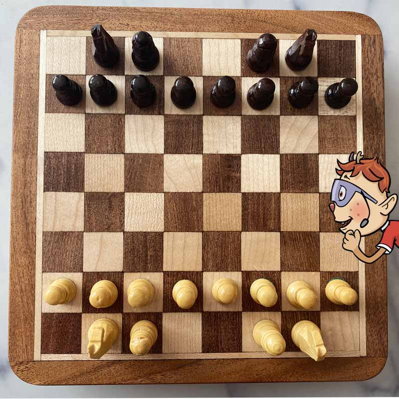
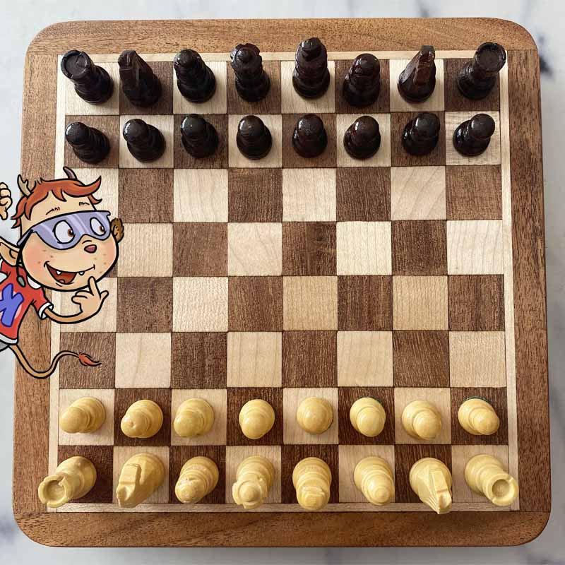

Hast du schon Schach gespielt?
Als das KABU-Team einen Hort besucht hat, haben alle nicht schlecht gestaunt: Aktuell beschäftigen sich die Kinder am Liebsten mit dem Spiel Schach! Aber kein Wunder: Schach gehört zu den beliebtesten Spielen in Europa.
Gemeinsam mit der Kinderredaktion erklärt dir KABU die wichtigsten Grundregeln, damit auch du gleich loslegen kannst.
Video:
So geht’s
Schachmatt! Lege das Spielbrett in die Mitte zwischen dich und einer weiteren Person. Achte darauf, dass du und dein Gegenüber jeweils ein weißes Feld in der rechten Ecke vor Euch liegen habt.
Ziel des Spiels ist es, den gegnerischen König in eine Situation zu bringen, aus der er sich nicht mehr retten kann, ihn also mattzusetzen.
Die Aufstellung der Spielfiguren
Stellt nun die Sachfiguren in der richtigen Reihenfolge auf:
Die Bauern
Es gibt insgesamt 8 Bauern in deinem Team. Stelle diese - wenn du die weißen Steine hast - der Reihe nach von a2 bis h2 auf. Hast du die schwarzen Steine, stellst du diese in die Reihe a6 bis zu h7 auf.
Der Läufer
Du hast 2 Läufer. Stelle bei den weißen Steinen, einen auf c1 und den Zweiten auf f1. Hast du die Farbe Schwarz stelle einen Läufer auf c8 und f18.
Der Springer/ Das Pferd
Du hast auch zwei Springer in deinem Team. Hast du die Farbe weiß, stelle ein Pferd auf b1 und das andere auf g1. Bei den schwarzen Steinen stellst du die Springer auf b8 und g8.

Der Turm
Auch hiervon hast du zwei Stück. Bei Weiß positionierst du einen Turm auf dem Feld a1 und den anderen auf h1. Bei Schwarz stellst du die Türme auf a8 und h8.
Die Dame/ Königin
Von dieser Figur hast du nur einen Stein in deinen eigenen Reihen. Stelle die helle Dame auf d1. Die dunkle Dame auf d8.
Der König
Von der wichtigsten Figur, gibt es auch nur einen Stein pro Team. Stelle den hellen König auf das Feld e1. Den Dunklen stellst du auf e8.

Jetzt kann es auch schon losgehen! Die Person mit den weißen Steinen eröffnet das Spiel!
Wenn du kein Schachbrett hast, kannst du dir ganz schnell aus Pappe und Farbe ein eigenes basteln. Die wichtigsten Hinweise:
- Ein Schachbrett besteht insgesamt aus 64 Kästchen (32 helle und 32 dunkle).
- Die 8 Reihen (horizontal) werden mit Zahlen (1 bis 8) beschriftet.
- Die 8 Spalten/Linien (vertikal) werden mit Buchstaben (a bis h) beschriftet.
- Insgesamt gibt es 32 Figuren im Spiel (16 für jede Person).
Es gibt noch weitere Regeln und Begriffe bei Schach. Bei der Suche können dir vor allem Kindersuchmaschinen (zum Beispiel FragFinn) weiterhelfen.
💭 Sprechblase Es gibt noch weitere Regeln und Begriffe bei Schach. Bei der Suche können dir vor allem Kindersuchmaschinen (zum Beispiel FragFinn) weiterhelfen.
Vielen Dank!
Wir bedanken uns bei Kinderredaktion in der Schussenrieder Straße in München!
Wenn du ein spannendes Thema hast, eine Frage, die dich brennend interessiert oder ein Spiel, das deiner Meinung nach auch andere Kinder kennen sollten, dann schreib gerne dem KABU-Team. Das geht ganz einfach, indem du auf den blauen Button Schreib dem KABU-Team klickst. Vielleicht können wir gemeinsam mit deiner Hilfe einen Beitrag erstellen, der hier in der App veröffentlicht wird.